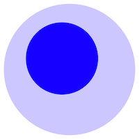

Working vault — Clearing and Settling the Realm & HistorEE

This repository is the idea-side companion to the HistorEE project and the book Clearing and Settling the Realm (ergodicity economics and entity-shielding applied to Japanese and comparative financial history). It is a Foam vault: a git repository of atomic, cross-linked Markdown notes edited in VS Code. Where the sibling repository HistorEE_codebooks holds the evidence — datasets, schemas, coding decisions — this vault holds the claims: the arguments, distinctions, and objections out of which the chapters and the grant prose are assembled.
Why a vault, and why this one
The organising bet is on the substrate, not on any application. A note here is a plain Markdown file with [[wikilinks]]; the vault is a git repository; the editor is VS Code. Nothing in the notes depends on a runtime, a plugin, or a vendor. If every tool named in this paragraph vanished tomorrow, what remained would still be a greppable, diffable, scriptable corpus of prose with its link structure intact. For a project whose entire epistemic stance is provenance — every datum traceable, every decision attributed — the knowledge base must rest on the same durable footing as the data, not on a proprietary store that is Markdown only for now.
Three properties follow, and they are the reasons for the choice.
Git-native. Attribution, history, branching, review, and continuous integration come for free, because the vault simply is a git repository. git blame records who wrote a claim and when; a pre-commit hook and a GitHub Action validate the vault on every change. The knowledge repository is governed exactly as HistorEE_codebooks is — one discipline across ideas and data, not two.
Enforceable conventions. Because the notes are inert files, their conventions can be checked rather than merely hoped for. scripts/validate_vault.py confirms that every note carries the required frontmatter, that every heading is followed by a blank line, that every wikilink resolves, and that every tag is drawn from the controlled vocabulary in tags.md. A vault that cannot be linted degrades silently as it grows; this one fails the build instead.
In place with the work. The book, the grant, the code, and the data already live in VS Code and git. Keeping the notes there too collapses the context switch: drafting a chapter means reading claims from this vault and evidence from the codebooks in the same window, in the same tool, under the same version control.
Against Obsidian, fairly
Obsidian was the obvious alternative, and it was set aside deliberately rather than reflexively. Its virtues are real: a smoother editing experience, a better native graph view, strong mobile support, and a far richer plugin ecosystem, all of which lower the barrier for a contributor who does not live in a terminal. Those are genuine costs of the present choice and should be named as such.
They are outweighed by three considerations. First, collaboration: Obsidian is at heart a single-user tool, its synchronisation is a paid service and its git support a bolted-on plugin, whereas git collaboration — signed commits, a protected main, pull-request review — is the native mode here and the standard the HistorEE team is already held to. Second, governance: the frontmatter schema, the controlled tag vocabulary, and link integrity cannot be enforced in continuous integration from inside Obsidian, because its power lives in app-resident plugins rather than in scriptable files. Third, dependence: Obsidian’s capabilities are the app’s and travel with it, whereas Foam adds nothing the files rely on. The wager is that VS Code, git, and Markdown will outlast any particular note-taking product — Foam itself included.
The honest asymmetry is the on-ramp. A contributor fluent in VS Code and git gains consistency and rigour; one who is not faces a steeper start than Obsidian would demand. Because the project already works this way, the marginal cost is small and the coherence gain large — but it is a real trade, made with eyes open.
What it is meant to gain
One knowledge base that behaves like the rest of the project: versioned, attributed, reviewable, citable, and durable in plain text. Atomic notes, tagged by concept rather than by project, so that ideas link across the book and the grant instead of rebuilding project silos; hub notes (Maps of Content) for navigation; and a controlled vocabulary that keeps the graph honest as it grows. The vault is at once the substrate from which chapters and application text are composed and the record of how each idea arose — source-session frontmatter and git blame together — so that the provenance of an argument becomes as legible as the provenance of a number in the codebooks.
Organisation and conventions
notes/ holds atomic notes, one claim each; mocs/ holds the hub notes; tags.md is the controlled vocabulary; glossary.md explains the abbreviations and the frontmatter schema; scripts/ holds the validator and the graph exporter; graph/ holds generated output. The full house rules — the note model, the frontmatter schema, the tagging discipline, the voice — live in CLAUDE.md and govern any writing in this repository. Read that before adding notes.
The knowledge graph
scripts/export_graph.py renders the vault’s wikilink structure to a portable, self-contained graph/graph.html, mirroring the interactive graph Foam draws in VS Code. Both are coloured from one categorical palette — ColorBrewer Dark2 — chosen because it is colourblind-safe: the node classes a reader must tell apart stay distinct under red–green and blue–yellow colour-vision deficiency, which matters for a repository meant to be shown and shared. Colour encodes category, never magnitude: MOC hubs in orange, source (literature) notes in purple, concept tags in green, content notes in teal, with note maturity and codebooks datasets given their own Dark2 hues. The mapping is pinned in two places — .vscode/settings.json for Foam (keyed by note type) and the exporter’s COLOR table (keyed by status) — so the two graphs share one colour vocabulary instead of drifting apart.
Status
The vault is presently single-author working notes, but it is built to become a shared instrument for HistorEE: the git model, the controlled vocabulary, the MOC hubs, and the validation are all in place precisely so that more than one hand can contribute without the collection decaying. Contribution conventions will track those of HistorEE_codebooks — branch, validate, review, sign — as the team grows into it.
Licence and citation
Two licences, split by what a file is, mirroring HistorEE_codebooks: the note prose (notes/, mocs/, tags.md, glossary.md, this readme) is CC BY 4.0; the code (scripts/, .githooks/, .github/) is MIT. A note may narrow its own terms in a license: frontmatter field — used where it quotes archive-restricted or in-copyright material. Full details in LICENSING.md; machine-readable citation in CITATION.cff.